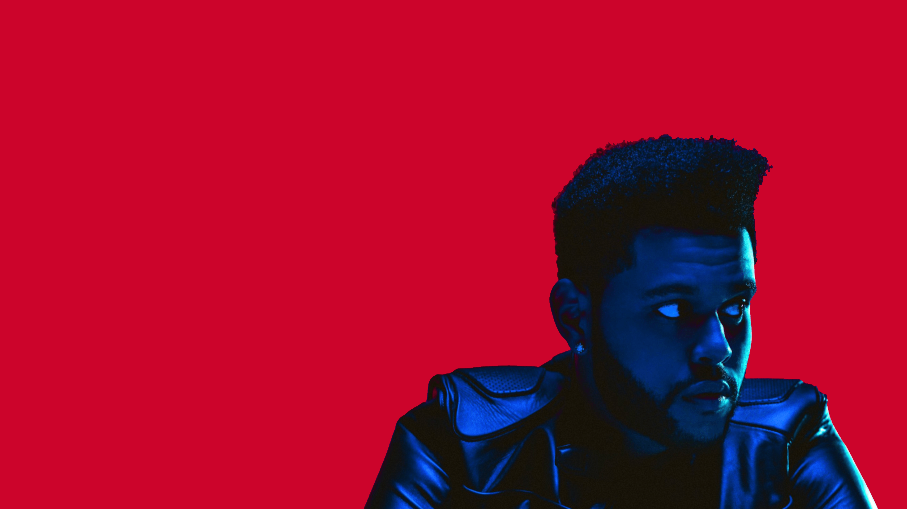

“Baby I’m a pro at letting go,
I love it when they come and go.”

“I chose the life,
then I realized she might have been the one,
I let her go for a little fun.”

“I was very camera shy.
People like hot girls,
so I put my music to hot girls and it just became a trend.
The whole ‘enigmatic artist’ thing, I just ran with it.
No one could find pictures of me.”
“It’s always been in me.
I just had to be confident enough to let it out.”
“Push it to the limit,
push it through the pain.”

“I don’t care about you,
why you worried about me?”